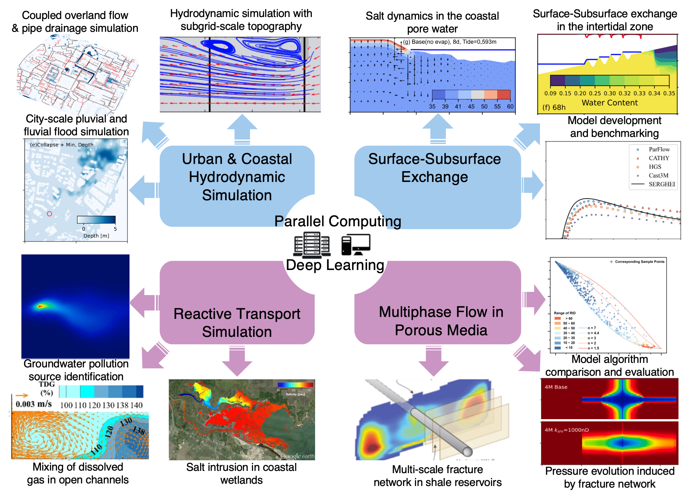

Zhi Li
This is the research website of Zhi Li. I develop high-performance numerical models to study environmental fluid mechanics, hydrology and multiphase flow in porous media. The core of my research is to combine innovative numerical algorithms and advanced computing technologies, aiming at understanding complex fluid processes in the environment and developing mature tools for solving practical large-scale engineering problems.
Research
Two main themes of my research are:
(1) Develop HPC-based numerical methods and models to achieve accurate, efficient and robust hydrologic simulations.
(2) Apply the developed model to solve scientific and engineering problems in surface and subsurface hydrology.

Publications
[20] N Zheng, Z Li, X Xia, S Gu, X Li, S Jiang, Estimating line contaminant sources in non-Gaussian groundwater conductivity fields using deep learning-based framework. Journal of Hydrology (2024), 630, 130727
https://doi.org/10.1016/j.jhydrol.2024.130727
[19] Z Li, D Caviedes-Voullieme, I Ozgen-Xian, S Jiang, N Zheng, A comparison of numerical schemes for the GPU-accelerated simulation of variably-saturated groundwater flow. Environmental Modelling & Software (2024), 171, 105900
https://doi.org/10.1016/j.envsoft.2023.105900
[18] C Wu, S Jiang, X Xia, Y Sun, Z Li, M Ju, S Li and S Liu, Estimation of pollution sources and hydraulic conductivity field in a coastal aquifer under tidal effects. Marine Georesources & Geotechnology (2024)
https://doi.org/10.1080/1064119X.2023.2280636
[17] S Li, C Dai, Y Duan, Z Li, et al, Non-radical pathways in peracetic acid-based micropollutant degradation: A comprehensive review of mechanisms, detection methods, and promising applications. Separation and Purification Technology (2024), 330, 125240
https://doi.org/10.1016/j.seppur.2023.125240
[16] Z Li, MT Reagan, GJ Moridis, History-matching shale reservoir production with a multi-scale, non-uniform fracture network. Gas Science and Engineering (2023), 115, 205019
https://doi.org/10.1016/j.jgsce.2023.205019
[15] Y Han, C Dai, J Li, Z Li, X You, R Fu, Y Zhang, L Zhou, Kill two birds with one stone: Solubilizing PAHs and activating PMS by photoresponsive surfactants for the cycle remediation of contaminated groundwater. Separation and Purification Technology (2023), 320, 124242
https://doi.org/10.1016/j.seppur.2023.124242
[14] N Zheng, S Jiang, X Xia, W Kong, Z Li, et al, Efficient estimation of groundwater contaminant source and hydraulic conductivity by an ILUES framework combining GAN and CNN, Journal of Hydrology (2023), 621, 129677
https://doi.org/10.1016/j.jhydrol.2023.129677
[13] C Dai, X You, Q Liu, Y Han, Y Duan, J Hu, J Li, Z Li, et al, Peroxymonosulfate activation by Ru/CeO2 for degradation of Triclosan: Efficacy, mechanisms and applicability in groundwater. Chemical Engineering Journal (2023), 463, 142479
https://doi.org/10.1016/j.cej.2023.142479
[12] X Shen, S Li, H Cai, Z Li , N Cui, Distribution and interaction characteristics of water quality at the stratified confluence reservoirs. Journal of Hydrology (2023), 620, 129464
https://doi.org/10.1016/j.jhydrol.2023.129464
[11] Z Li, BR Hodges, X Shen, Modeling hypersalinity caused by evaporation and surface-subsurface exchange in a coastal marsh. Journal of Hydrology (2023), 618, 129268
https://doi.org/10.1016/j.jhydrol.2023.129268
[10] W Tong, C Dai, J Hu, J Li, M Gao, Z Li , L Zhou, Y Zhang, L Kahon, Solubilization and remediation of polycyclic aromatic hydrocarbons in groundwater by cationic surfactants coupled nanobubbles: Synergistic mechanism and application. Journal of Molecular Liquids (2023), 373, 121242
https://doi.org/10.1016/j.molliq.2023.121242
[9] L Stolze, B Arora, D Dwivedi, C Steefel, Z Li, S Carrero, B Gilbert, P Nico, M Bill, Aerobic respiration controls on shale weathering. Geochimica et Cosmochimica Acta (2023), 340, 172-188
https://doi.org/10.1016/j.gca.2022.11.002
[8] Z Li, CS Sherman, MT Reagan, GJ Moridis, JP Morris, Effects of heterogeneous fracture aperture on multiphase production from shale reservoirs. Transport in Porous Media (2022) 144, 797-823
https://doi.org/10.1007/s11242-022-01841-0
[7] X Shen, BR Hodges, R Li, Z Li, JL Fan, NB Cui, HJ Cai, Factors influencing distribution characteristics of total dissolved gas supersaturation at confluences. Water Resources Research (2021) 57 (6), e2020WR028760
https://doi.org/10.1029/2020WR028760
[6] Z Li, BR Hodges, Revisiting surface-subsurface exchange at intertidal zone with a coupled 2D hydrodynamic and 3D variably-saturated groundwater model. (2021) Water 13 (7), 902
https://doi.org/10.3390/w13070902
[5] JT Birkholzer, J Morris, JR Bargar, F Brondolo, A Cihan, D Crandall, H Deng, W Fan, W Fu, P Fu, A Hakala, Y Hao, J Huang, AD Jew, T Kneafsey, Z Li, C Lopano, J Moore, G Moridis, S Nakagawa, V Noel, M Reagan, CS Sherman, R Settgast, C Steefel, M Voltolini, W Xiong, J Ciezobka, A new modeling framework for multi-scale simulation of hydraulic fracturing and production from unconventional reservoir. (2021) Energies 14 (3), 641
https://doi.org/10.3390/en14030641
[4] Z Li, I Ozgen-Xian, FZ Maina, A mass-conservative predictor-corrector solution to the 1D Richards equation with adaptive time control. (2021) Journal of Hydrology 592, 125809
https://doi.org/10.1016/j.jhydrol.2020.125809
[3] Z Li, BR Hodges, On modeling subgrid-scale macro-structures in narrow twisted channels. (2020) Advances in Water Resources 135, 103465
https://doi.org/10.1016/j.advwatres.2019.103465
[2] Z Li, BR Hodges, Model instability and channel connectivity for 2D coastal marsh simulations. (2019) Environmental Fluid Mechanics 19 (5), 1309-1338
https://doi.org/10.1007/s10652-018-9623-7
[1] Z Li, BR Hodges, Modeling subgrid-scale topographic effects on shallow marsh hydrodynamics and salinity transport. (2019) Advances in Water Resources 129, 1-15
Experience
Research Scientist
Postdoctoral Scholar
Education
The University of Texas at Austin
University of California Berkeley
Shanghai Jiao Tong University
University of Michigan Ann Arbor
Team
Our group photo taken on Sept. 2023

Openings
MS, PhD and Postdoc positions are all available. Please contact by email if you are interested. Note that (1) experience in numerical modeling and coding is not mandatory, but is strongly recommended, and (2) for applicants whose first language is not Chinese, an HSK score is mandatory.